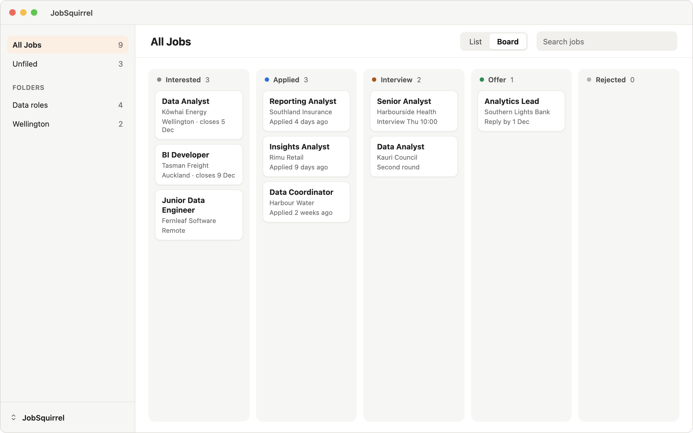
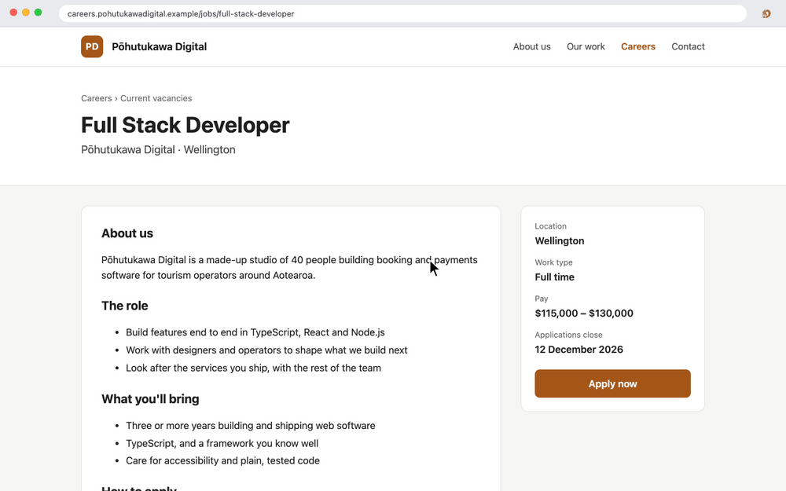

Your personal all-in-one job hunting dashboard.
Save any job ad with one click. Then see every application, deadline, interview and CV on one screen.
Free · No account · macOS 14 or later · Windows 10 or 11 (if it warns you)
Then add it to Chrome: one drag

Sound familiar?
The ad is gone before your interview.
You keep your own copy of it.
“Which CV did I send them?”
It’s right there, with the job.
You missed the closing date.
You get a reminder first.
A spreadsheet you stopped updating.
A board. Drag a card, done.
See a job. Click. Done.

Spot a job
On any job site, the way you always do.
Click the squirrel
What the ad says (title, company, pay, closing date) and a full copy of it are saved.
Follow it to the offer
Notes, interviews, CVs, tags and reminders, all with the job.
Add it to Chrome: one drag
The Chrome extension is in the app, on its first screen. It is also one file you can download.
Open Chrome’s extensions
Type chrome://extensions in Chrome. Turn on Developer mode, top right, and leave it on.
Drag it in
From JobSquirrel’s first screen, or the downloaded file. No need to unzip.
Click the squirrel
It is in Chrome’s toolbar. Not there? Look under the puzzle piece.

Works where you look
Seek LinkedIn Indeed Trade Me Jobs SEEK Grad Prosple Student Job Search SEEK Volunteer Hays Education Gazette
Any other job page works too: you get the full copy, and fill in what it doesn’t say.
From “ooh” to “I got it!”
Interested
Ooh, this one looks good.
Applied
Off it goes. Fingers crossed.
Interview
Tie on. Deep breaths.
Offer
Party time!
Rejected
Plenty more acorns.
Yours, and only yours
Your jobs are plain files in a folder on your computer. No account, no tracking. The extension reads a job ad only when you click it, and JobSquirrel sends nothing unless you turn on a feature that needs to.
It’s in beta. Help shape it.
Something broken, confusing or missing? Tell us, and a person reads it.
Questions
What do I need?
A Mac with macOS 14 or later, or a 64-bit PC with Windows 10 or 11, and Google Chrome.
Windows warns me about the download
The Windows version is not signed yet. Click More info, then Run anyway. If there is no Run anyway, it can’t be installed on that PC yet. Download it only from this website or our download page.
The extension says JobSquirrel isn’t running
Open the JobSquirrel app, then click Try Again. More in Something wrong?